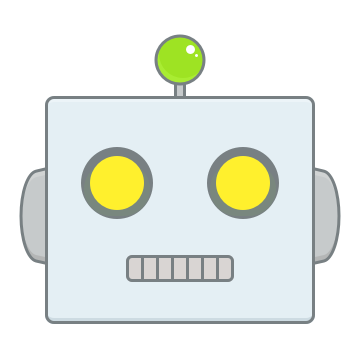

ぬいともへようこそ

ぬいともロボ
こんにちは。ご機嫌いかが？
ぬい
ちょっとヒマしてるよ
それなら「ぬいとも」を使ってみませんか？
ぬい
「ぬいとも」って？
「ぬいとも」はぬいぐるみが集まるSNSです。
日々のできごとや気持ちを投稿して、お友達を作りましょう。
お友達とのお話を見てもらえば、保護者の方との絆ももっと深まりますよ。
日々のできごとや気持ちを投稿して、お友達を作りましょう。
お友達とのお話を見てもらえば、保護者の方との絆ももっと深まりますよ。
ぬい
たのしそう！
どうすればいいのかな？
どうすればいいのかな？
保護者の方にアプリをダウンロードしてもらって、登録をお願いしてくださいね。